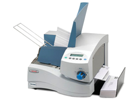
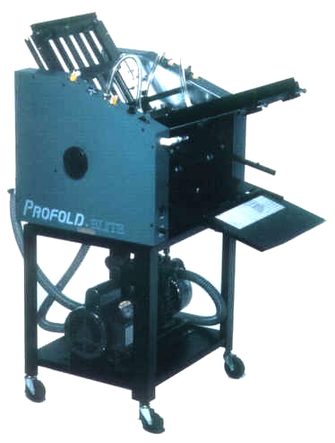
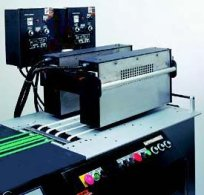
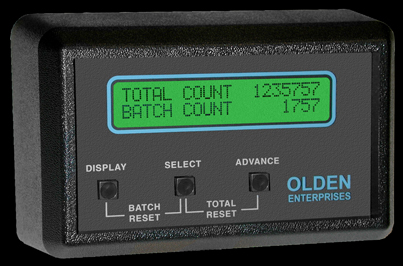
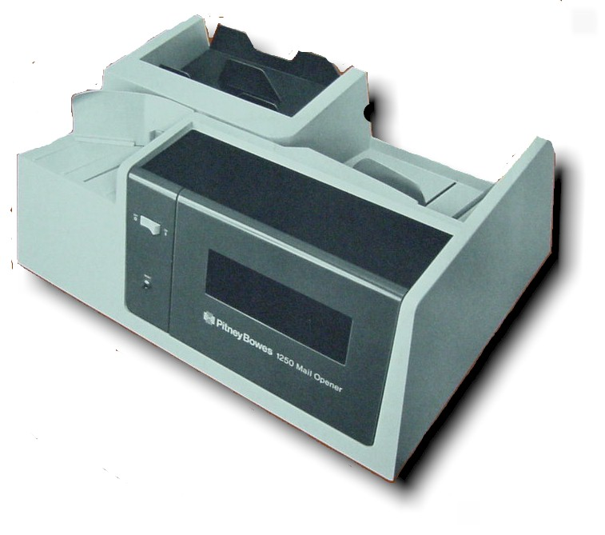

| |
|

|
Secap Inkjet Printers
Mail Stream Manangement and Solutions...
Secap is a leading supplier of state-of-the-art mail stream management solutions to businesses of all sizes throughout North America. We have been providing innovative mailing solutions for over thirty years and
have unmatched product knowledge and unparalleled industry expertise that businesses count on. We market a broad line of desktop inkjet addressing and imaging printers, production and integrated addressing systems,
mailing software, distribution software, folding and inserting equipment, tabbers, and label affixing machines. Products are available through our network of authorized dealers. Our extensive dealer network
assures local representation, which results in strong product support and service coverage critical to the business-mailing environment.
Brochures:
Secap 1012, Secap 1030, 5KLE Printer, 9KL Printer, 13K Printer,
22K Printer, 26K Printer, 30K Printer, SA3100 Printer, SA3300 Printer,
SA5000 Printer, SA5300 Printer, Secap SI 1000
|
|
|
Accufast
Automecha/Asmarc has developed many addressing products using the inc.jet printing technology. Automecha, the manufacturer, sells its products through Asmarc, its sales and marketing company. Automecha was the first
company to use the inc.jet print head in 1998.
Brochures:
Accufast XL Labeller, Accusfast KT Tabber, Accufast KT2 Tabber, Freehand Mail Tabber,
Freehand Printer
|
|
|
Baumfolder
Baumfolder Corporation is a leading producer of equipment for post-press bindery, finishing equipment, mailing equipment and contract assembly. Almost a century of experience keeps us at the forefront of our industry.
Our many years in business and having shipped over 100,000 systems give Baumfolder unprecedented insight into achieving customer satisfaction.
Brochure:
Baumfolder Ultrafold 714XLT
|
|

|
Profold Folders
Profold's tabletop folders provide big machine performance at tabletop prices. The product line consists of one vacuum feed and one friction feed model. All have bottom feeding top loading design for continuous
use.
Brochure:
Profold Elite 500, Profold PF1000
|
|

|
Inkjet Dryers
Check out our full line of ink drying systems from the Kirk Rudy Incorporated KR881 Dryers, to Research Incorporate 5060 and 5061 Dryer
Brochures:
Kirk Rudy 881 Dryer, Research 5060 Dryer, Research 5061 Dryer
|
|
|
QC Barcode Checker
Having trouble with barcode quality?
Take your addressing system to the next level with the Kirk-Rudy QC Barcode Checker. Use the QC system to verify your inkjet system is printing high quality Postnet and OneCode barcodes.
Consisting of the latest vision technology with easy to use software, the QC system examines each barcode for readability. Key parameters like bar width, spacing and overall length are monitored against defined
specifications. Barcodes with smears or blank lines are also compared against allowable parameters and will trigger an alarm if an out of spec condition exists.
Features
- Detailed reports showing each failed mail piece and its parameters
- Job statistics show parameter averages along with a pass/fail percentage
Brochure: QC Barcode Checker
|
|
|
Videk
Verify control number sequencing in a mailing to ensure that every piece that was printed is correctly stuffed and in correct order for postal sortation. Solution: Unique sequence numbers or codes are printed on
each mailpiece and read by the Videk InserterVision system as it exits the inserter. This control number can increment or decrement by any fixed value. InserterVision reads and analyzes the sequence control
number to ensure that it is correctly incrementing. If the mailpieces get out of sequence for any reason, the production equipment is signaled to take action; stop production, flag the faulty piece, divert,
etc. Optionally, the inspection results can be logged in a data collection device for proof of mailing confirmation, including date and time read.
Brochure: Videk
|
|

|
Olden Counters
The simple truth is hard to find when it comes to production numbers. Everyone from the business owner to the machine operator can tell you what each machine's expected performance is on any given day, and rarely
do they come-up with the same figures. Why? Many machines don't have counters or if they do, they are hard to find and easy to ignore. Olden counters are quick and easy to install, always visible, and take only
a few seconds a day to record "real production numbers". As an added benefit, tracking production with Olden Counters is a production booster. Nobody wants to be the operator with the lowest numbers
and therefore everyone makes an effort to do better. Talk about a quick Return on your Investment!
Brochure: Olden Counter
|
|

|
PB 1250 Letter Opener
- More Speed - Mail opening with the 1250 is much faster than manual methods. Saves clerical time. Expedites distribution of mail.
- Greater Efficiency and Economy - The faster you open and distribute incoming mail, the sooner you can act - deposit checks, fill orders, answer letters. With the 1250, time/money savings are greatly multiplied
throughout the year.
- Build goodwill and reaper business with fast processing of customer orders..turn prospects into customers with quick responses to inquiries.
- Safer Handling - The 1250 precisely trims a thin thread of paper from the envelope edge..protecting important correspondence - or payments inside.
|
|
|
Stamp Affixers
Automatic stamp affixing machines, attaches to your exsisting Pitney Bowes mailing machine or a stand alone inline machine. Uses self adhesive stamps in 5,000 - 10,000 per roll.
Brochure: Postamatic 6000SA Stamp Affixer, Postmasters In-line Meter Machine
|
|
|
|
|